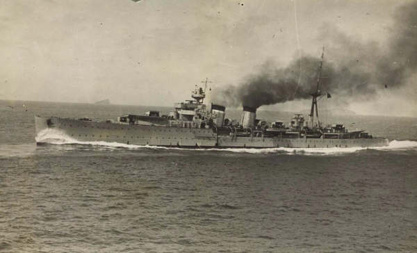

Almirante Cervera
Crucero de España, perteneciente a la clase Almirante Cervera. Sirvió con el bando sublevado durante la Guerra Civil y operó en el Cantábrico.

Diseño y función
Almirante Cervera pertenecía a la clase Almirante Cervera. Crucero ligero para bloqueo y apoyo costero. Sus prestaciones se detallan en la tabla técnica, con las fechas o condiciones disponibles en la referencia.
Operaciones y trayectoria
Sirvió con el bando sublevado durante la Guerra Civil y operó en el Cantábrico. Realizó misiones de bloqueo, bombardeo costero y apoyo a operaciones terrestres.
Destino final y conservación
Continuó en la Armada española en la posguerra y fue retirado en la década de 1960.